Deliverable 7
November 23, 2026 · PanNuke (cell nuclei) and BCSS (tissue regions)
Recap of results
mIoU, change vs. the base model in brackets. — = not run (yet).
The BCSS recap uses the earlier pretrained U-Net and central-256 field. The trained full-512 checkpoint and its correction results are reported under BCSS results.
| Method | PanNuke · Breast test | BCSS · dev | BCSS · val |
|---|---|---|---|
| Base | 0.4323 | 0.7067 | 0.6489 |
| Pair (HW) | — | 0.7097 (+0.0030) | 0.6507 (+0.0019) |
| Pair (DD) | 0.4324 (+0.0001) | 0.7090 (+0.0023) | 0.6506 (+0.0018) |
| Hier | 0.4323 (0.0000) | 0.7107 (+0.0040) | 0.6517 (+0.0028) |
| Hier+Decay | 0.4323 (0.0000) | 0.7108 (+0.0041) | 0.6517 (+0.0029) |
| Cluster | 0.4344 (+0.0020) | 0.7163 (+0.0095) | 0.6544 (+0.0055) |
| Presence | — | 0.7229 (+0.0162) | 0.6550 (+0.0061) |
| Pres+Clust | 0.4484 (+0.0161) | 0.7242 (+0.0175) | 0.6564 (+0.0075) |

Sources: PanNuke experiments/pannuke_wcsp/organ_wcsp/breast/evaluation.json (branch organ-wcsp-breast, Nov 22); BCSS run summaries (λ = 8).
Problems
| Problem | Dataset | What goes wrong | What could fix it |
|---|---|---|---|
| Segmentation | BCSS | One true region is broken into many pieces | Train the U-Net to keep regions whole |
| Class identification | BCSS | A whole region gets the wrong class, or a class that isn't in the tile | Strong data-derived rules (e.g. presence), not light smoothing |
| Mixed tissue types | PanNuke | Patches from all organs share one model and one prior, so no organ is fit well | Run per tissue type: fit and tune on one organ at a time |

PanNuke
Preliminary experiments
Frozen HoVer-Net · 400 dev patches from PanNuke folds 1 and 3 (all organs except Adrenal) · rules counted on 4,089 separate patches · no training.
On PanNuke, a segmentation error is an outline mistake: a nucleus that is missed, invented, or drawn too big or too small. A class identification error is a kind mistake: the right nucleus with the wrong cell type.
| Test | Result |
|---|---|
| Wrong pixels that are segmentation (outline) errors | 69% |
| Wrong pixels that are class identification (kind) errors | 31% |
| True nuclei HoVer-Net finds | 80% |
| Found nuclei with the right kind (voting → presence) | 80.7% → 82.8% |
| Presence on HoVer-Net (swept setting) | 0.4541 → 0.4797 (+0.0256) |
| Upper bound: true kinds given per patch | 0.5262 (+0.0721) |
| Upper bound: every found nucleus the right kind | 0.6902 (+0.2361) |


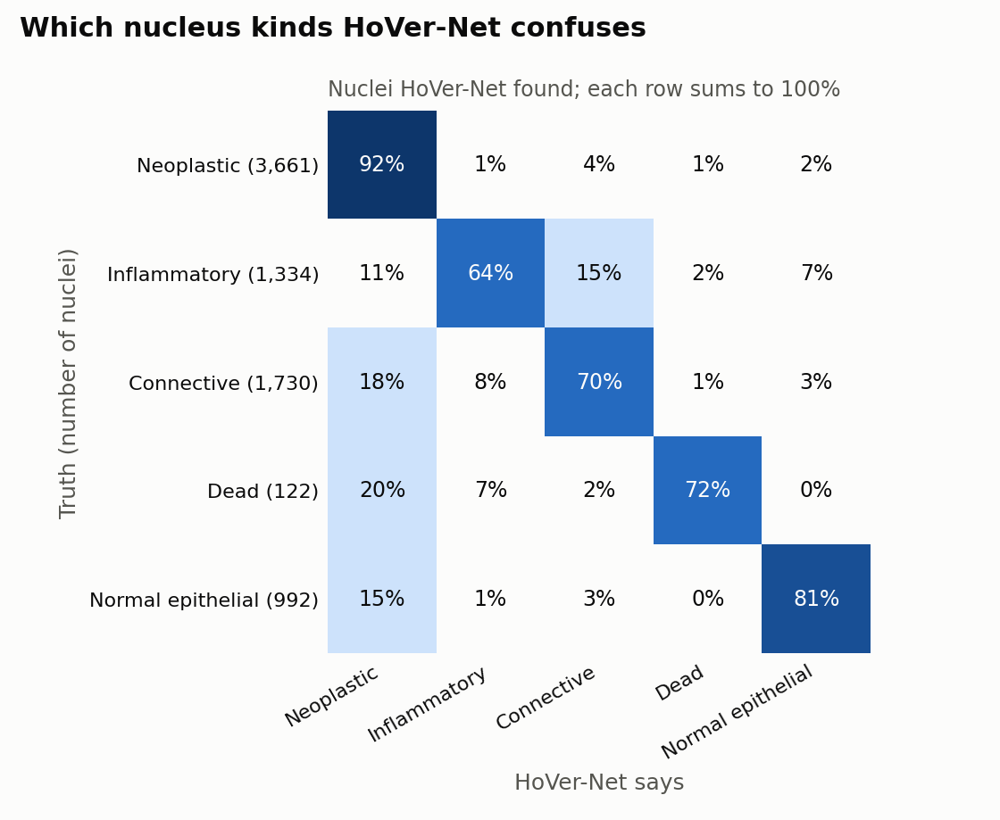

Breast examples

Sources: experiments/pannuke_wcsp/prelim_20261123/ (analyze.py, results.json). The rows were chosen by a fixed rule: the 3 largest and 1 smallest per-patch change.
Breast patch comparisons, every method side by side
Breast fold 2 test patches · same frozen HoVer-Net, nucleus outlines fixed. These panels use their own colors: purple = normal epithelial, green = inflammatory, blue = connective. Gold in the last panel marks labels that changed vs. the previous Breast WCSP, not dead cells. Per-patch mIoU averages all five kinds, so kinds absent from a patch score 0 and pull it down.
Each panel runs left to right: tissue → truth → raw HoVer-Net → previous global WCSP → previous Breast WCSP → larger sweep → BCSS-style presence (only allowed classes) → what changed.
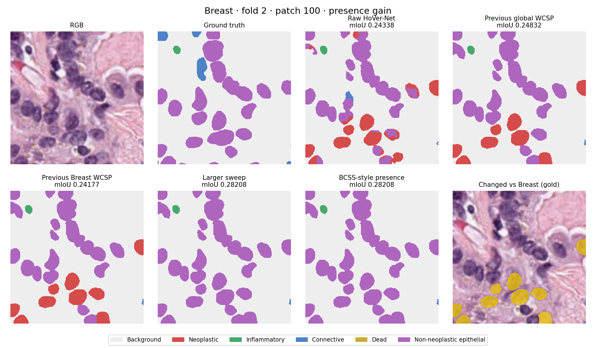


Selected illustrations from 78 patches, including failures, not a representative sample. Full Breast fold-2 cohort (exploratory): previous Breast WCSP 0.4484, larger sweep 0.4479, BCSS-style presence 0.4519. Source: experiments/pannuke_wcsp/bcss_cohesion_20261123/patch_comparisons/.
Results
This week's experiments
| Date | Experiment | Test set | Result (mIoU) |
|---|---|---|---|
| Nov 17 | Hierarchy decay: sibling, parent–child and fidelity schedules | 300 mixed-organ patches | All = raw HoVer-Net (0.3947, Δ ≈ 0); presence 0.4001 |
| Nov 22 | Breast: all 8 WCSP families fit and tuned on Breast only | 169 Breast | Only presence helps: 0.4344 → 0.4484 (+0.0141) |
| Nov 22–23 | Colon: same protocol | 106 Colon | Presence +0.0019 (not significant) |
| Nov 22 | Adrenal gland: same protocol | 144 Adrenal | Presence +0.0026 (not significant) |
| Nov 23 | Wider presence sweep: 1,584 settings | 600 fresh patches | 0.4326 → 0.4450 (+0.0124) |
| Nov 23 | Preliminary error analysis | 400 dev patches | 69% segmentation, 31% class identification |
| Nov 23 | BCSS-style presence on Breast | Breast fold 2 | 0.4484 → 0.4519 (exploratory) |
Gains are vs. fixed-mask voting (one label per detected nucleus), PanNuke's matched control.
Every PanNuke WCSP family was refit and retuned on one organ at a time, then scored once on that organ's held-out test patches. Gain = type set (PanNuke's presence rule) minus fixed-mask voting.
| Organ | Test patches | Voting | Presence, tuned for organ | Gain [95% CI] | Works? |
|---|---|---|---|---|---|
| Breast | 169 | 0.4344 | 0.4484 | +0.0141 [+0.0078, +0.0213] | Yes (Holm p = 0.003) |
| Colon | 106 | 0.4267 | 0.4286 | +0.0019 [−0.0013, +0.0055] | No |
| Adrenal gland | 144 | 0.3404 | 0.3429 | +0.0026 [−0.0052, +0.0111] | No |
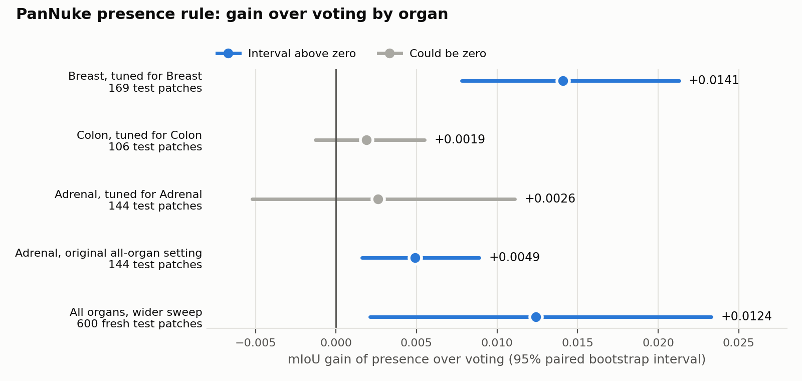
The other seven families (pixel table, hierarchy, scaling, decay, nucleus pairwise, type counts, component) move mIoU by less than ±0.004 on every organ, and none is significant. Adrenal uses PanNuke folds 1–3, since fold 2 alone left only 29 test patches.
Breast: one tissue type vs. all tissue types
Same 169 Breast test patches, presence fit and tuned on Breast only vs. on all tissue types.
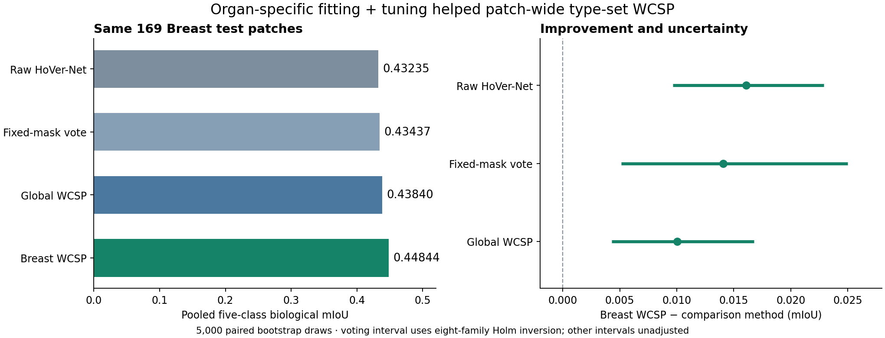
Wider sweep, like BCSS's presence sweep
1,584 settings of the presence rule: strength up to 32 (previously 4), count per organ or all organs, finer groups by nucleus count, and smoothing. Settings were picked on 400 patches and scored once on 600 fresh patches from PanNuke folds 1 and 3 (all organs except Adrenal).
| Method | mIoU | vs. voting [95% CI] |
|---|---|---|
| HoVer-Net, raw | 0.4337 | |
| HoVer-Net, voting | 0.4326 | — |
| Presence, original setting | 0.4369 | +0.0043 [+0.0020, +0.0072] |
| Presence, swept setting (strength 12, per-organ counts) | 0.4450 | +0.0124 [+0.0021, +0.0233] |

Sources: experiments/pannuke_wcsp/organ_wcsp/README.md (all three organs), organ_wcsp/adrenal_gland/, experiments/pannuke_wcsp/type_set_sweep_20261123/.
BCSS
Preliminary experiments
Full-resolution U-Net · 185 dev tiles · no training
Method: in each true region, if the U-Net's most common label is right, its wrong pixels are segmentation errors; if not, they are class identification errors.
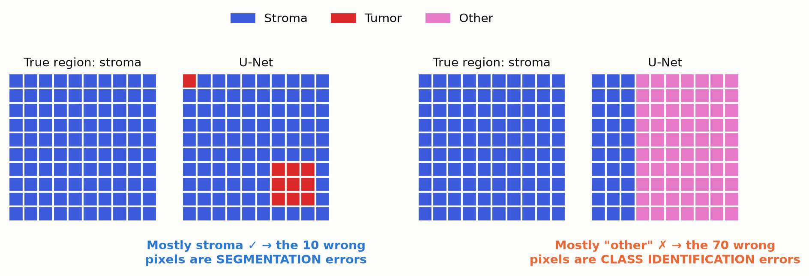
Test 1 · How much of each class is wrong?

Test 2 · What is fixing each one worth?

Results
1 · WCSP fixes (after the U-Net)
- Presence: remove classes whose combination is rare in the training ground truth unless the U-Net is confident, then smooth with WCSP.
- Cluster: label ~256 SLIC patches of similar colour as single units, then refine pixels.
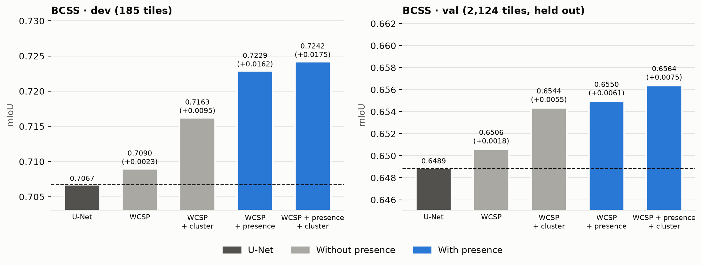
Examples (same 3 dev tiles for every method)
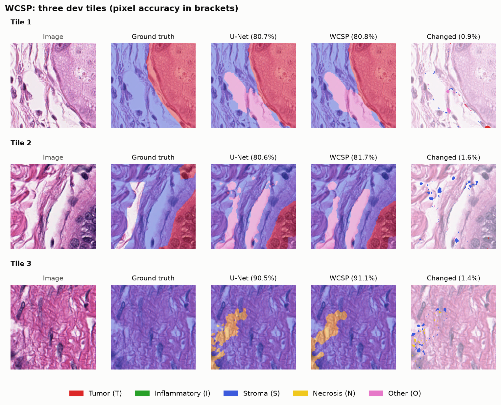
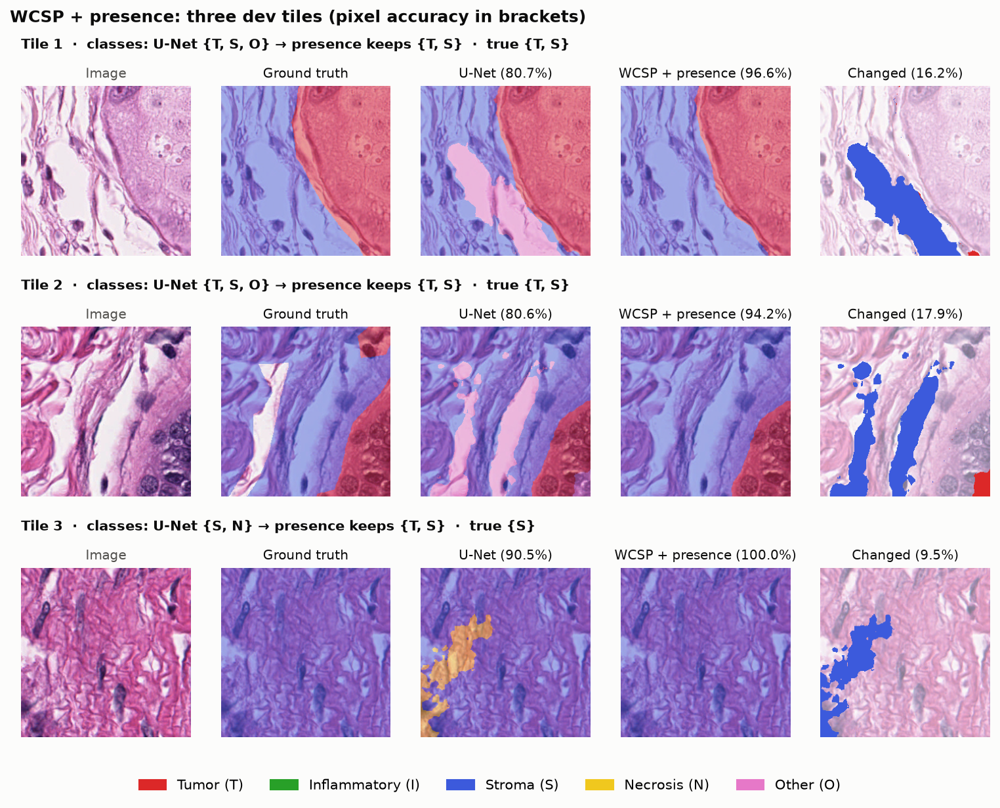
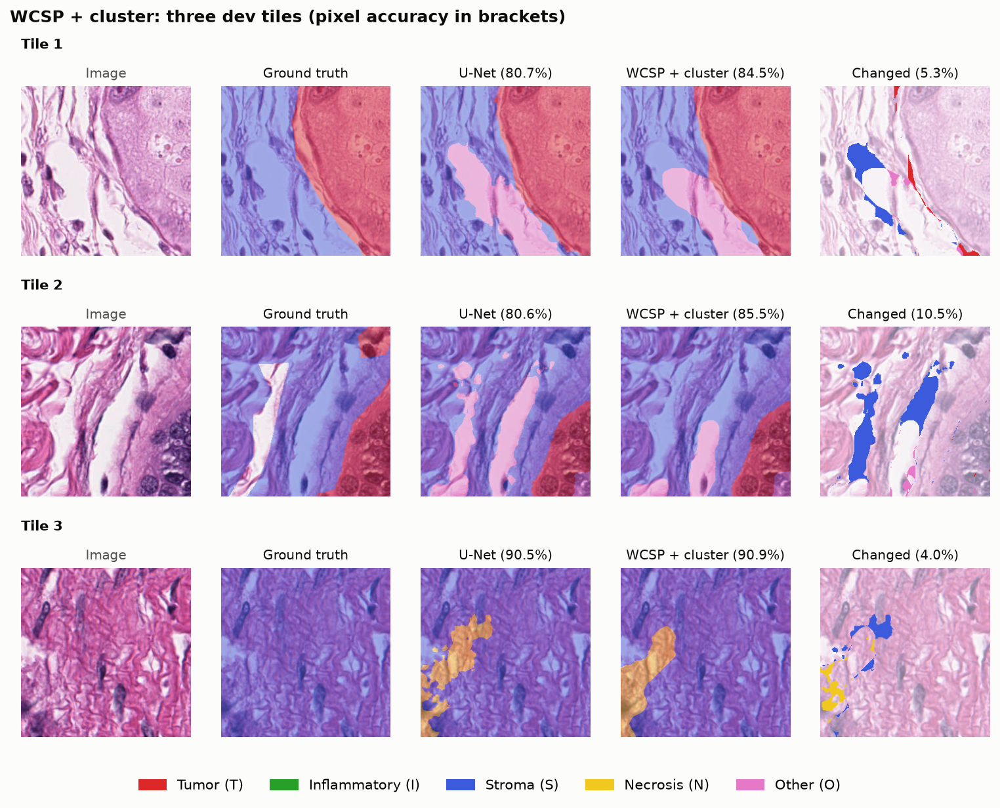
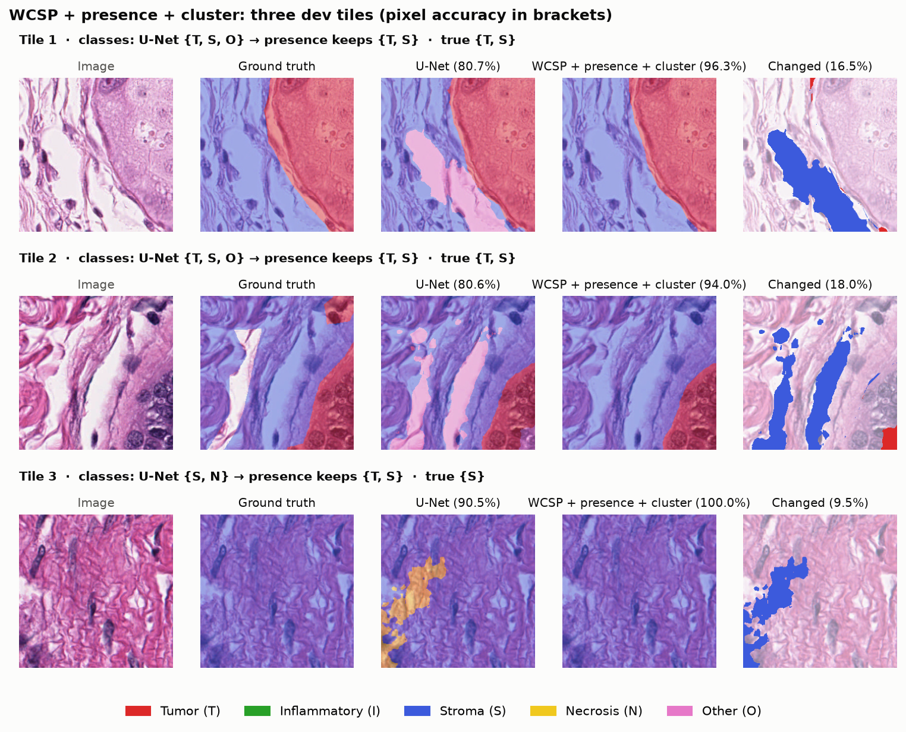
Other data-derived rules tried
| Rule (from training ground truth) | Alone (Δ vs WCSP) | On top of presence |
|---|---|---|
| Presence: rare class combinations cost more | +0.0139 | — |
| Neighbor tiles: a class is likely if an adjacent tile has it | +0.0039 | −0.0023 |
| Extra cost on "other" / necrosis | +0.0068 / +0.0055 | −0.0070 / +0.0024* |
| "Other" must cover ≥ 5% of the tile | +0.0029 | 0.0000 |
| Necrosis regions ≥ 1,024 px | +0.0010 | +0.0002 |
| Inflammatory must border stroma | +0.0007 | −0.0001 |
| Minimum piece size, every class | 0.0000 | — |
| Necrosis must touch tumor · ROI-level presence | not encoded: the ground truth breaks them | |
2 · U-Net training losses (changing the model itself)
- B · Segmentation loss: pixels in the same true region should get the same prediction.
- C · Presence loss: the model's predicted class set should match the tile's true class set.
| Model | Targets | Pilot, 2 epochs (start 0.6450) | Full, 10 epochs |
|---|---|---|---|
| A · cross-entropy | — | 0.5553 | 0.6679 |
| B · + segmentation loss | Segmentation | 0.5533 | next |
| C · + presence loss | Class identification | 0.5608 | next |
3 · Full-resolution corrections
WCSP fixes rerun on the full-resolution U-Net (whole 512 px tiles), with a refit presence prior and a new region move: relabel a whole connected region of the current labels at once.
| Full-res U-Net | Dev (185) | Val (3,229 scored tiles) |
|---|---|---|
| U-Net | 0.6524 | 0.6707 |
| WCSP | 0.6547 (+0.0023) | 0.6724 (+0.0018) |
| Multi-scale WCSP | 0.6570 (+0.0046) | 0.6736 (+0.0029) |
| Presence (γ = 4,000) + multi-scale | 0.6648 (+0.0124) | next |
| Region moves | 0.6670 (+0.0146) | next |
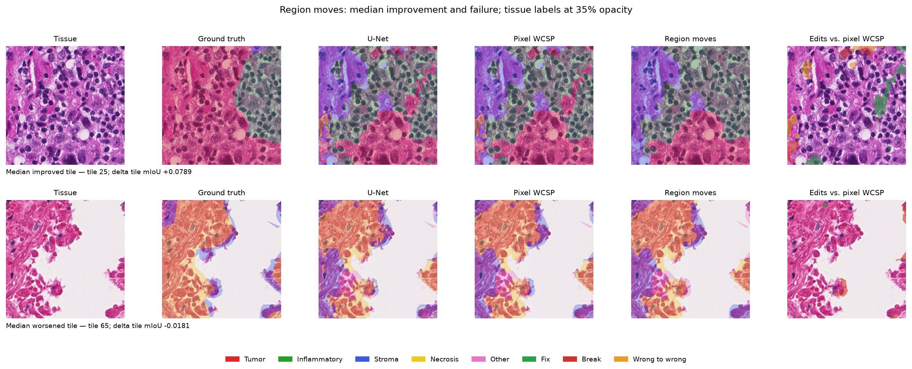
Tissue labels are shown at 35% opacity. The final column marks edits against pixel WCSP: green = fixed, red = broken, orange = still wrong. Examples are the median dev improvement and failure, selected after inspection.
Methods, sweep snapshot and intervals: details page.
Settings from dev sweeps: WCSP λ = 8, presence γ = 3,000, 256 SLIC patches. Multi-scale blocks and 23 decay schedules gave no gain.